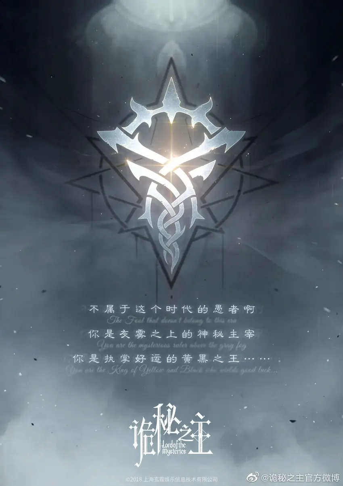

Power, worship, and allegiance
Explore the divine powers and organizations that shape the world across the Epochs.
Use the tabs to explore deities, the Orthodox Churches, Angel Families, the Secret Organizations of the world, detailed major faction profiles, and the religious orders that operate behind the visible world.
This is a deity! Mortals cannot fight against deities; same for angels. Those who have yet to become deities will never be able to fathom the power of deities. Roselle On Lord of Mysteries , Chapter 323
I’m already a member of a secret organization. From that moment forth, I’ve taken on a fate that requires me to constantly hide and lie to my friends... Is this the price — one out of many — to be paid? Fors Wall 's thoughts on joining the Tarot Club On Lord of Mysteries , Chapter 337
Deities
Gods & Outer DeitiesDefinition
Gods (神, Shén) refer to existences that are formed from the convergence of a minimum of one Uniqueness and three Sequence 1 Beyonder Characteristics. Any combination of Uniqueness + three Sequence 1 will converge into a God-level existence, rather than a special King of Angels.
- True Gods (真神, Zhēnshén) are when the components are from the same or adjacent Pathways.
- Ancient Gods (古神, Gǔ shén) are when the components are from non-adjacent Pathways.
The degree of madness does not affect the distinction between a True God and an Ancient God. For example, if someone with the four components from the same Pathway forcefully undergoes convergence without the Apotheosis Ritual, if not crazy, "They" are a True God; if crazy, "They" are a True God who lost control.
As for other Sequence 2s and below, they also don't affect the definition of a True God or an Ancient God, only the degree of madness.
Classification
True Gods
True Gods are also known as the Sequence 0 in the Pathway System. For a Beyonder to advance to a True God of a Pathway, they have to accommodate the Uniqueness and all three Sequence 1 Beyonder Characteristics of that Pathway.
A True God of one Pathway can further accommodate the Uniquenesses and at least one Sequence 1 Beyonder Characteristic of neighboring Pathways to become a Multi-Pathway True God.
When a True God accommodates the Sefirah, plus the Uniquenesses and at least one Sequence 1 Beyonder Characteristic of all neighboring pathways in the Above the Sequence group, "They" will become a Great Old One.
Ancient Gods
The Ancient Gods are Gods that didn't advance according to the Pathway System, but from direct convergence of characteristics. "They" are defined by characteristic mixing from non-adjacent Pathways, but must follow the general definition of a God, i.e., at a minimum, they must have one Uniqueness and three Sequence 1 characteristics. Both of the following cases are possible:
- "Their" three Sequence 1 Beyonder Characteristics come from non-adjacent Pathways.
- In addition to the Uniqueness and three Sequence 1 characteristics constituting a True God, "They" have other non-adjacent Uniquenesses and Sequence 1 characteristics.
For example:
- An Ancient God can be formed from one Uniqueness and four or five Sequence 1 Characteristics, as long as those four or five Sequence 1s are not from adjacent Pathways.
- If they have multiple Uniquenesses but don't have three Sequence 1 characteristics, they don't satisfy the definition of an Ancient God.
Apotheosis Ritual
Apotheosis Ritual (成神仪式, Chéng shén yíshì) refers to the Sequence 0 Advancement Ritual—the ritual to become a God. Similar to other Advancement Rituals, the function of the ascension ritual is to maintain self-awareness; it is not a prerequisite to achieve a qualitative change through aggregation of Beyonder Characteristics. Even in cases where becoming mad or suffering corruption is inevitable—such as when switching to a Non-Compatible Pathway (like Alista Tudor and Roselle Gustav), or the Demoness' Apotheosis Ritual that requires contact with the Chaos Sea—performing the Apotheosis Ritual still allows for better self-preservation than forcing the aggregation by directly consuming the Uniqueness and Sequence 1 characteristics like the Ancient Gods.
If a Sequence 1 only wishes to accommodate the Uniqueness and become a King of Angels, the corresponding Sequence 0 ritual can be simplified and won't be as difficult. However, when "They" attempt to advance to Sequence 0, even if "They" have accommodated the Uniqueness and three Sequence 1 Beyonder characteristics on separate occasions, "They" will still have to hold the full Apotheosis Ritual.
For Ancient Gods, the absence of the Apotheosis Ritual is one aspect that led to "Their" cognitive breakdown. Even if "They" performed the Apotheosis Ritual after becoming a God, it wouldn't improve "Their" condition.
Authorities and Traits of Gods
Moreover, a true god is unique.
- All General Powers/Characteristics of Angels, at a higher level.
- Theoretically, with enough time and proper arrangement, any Sequence 0 can destroy a star.
- If "They" take enough time, "They" can destroy a Star System.
- "Their" influence and power can reach the range of a Star System.
- All "Their" lower abilities can contain godhood and authorities, depending on whether "They" wish them to.
- Authority Embodiment: Having accommodated the Uniqueness - the manifestation of the authority of a Pathway - "They" become the embodiment of the corresponding Authorities, and have complete control over "Their" Pathway.
- Pathway Influence:
- "They" can directly influence Beyonders of the same Pathway, no matter where they are in the world. This includes, but not limited to:
- Modifying the Sequence abilities within their pathways to some extent.
- However, adjustments can only be made below the level of Uniqueness. This is the case even if "They" are a Great Old One.
- Making lower-sequence Beyonders of the same pathway hear murmurings.
- Directly interfering to increase the chance of losing control when someone consumes a potion to advance.
- Manifesting imageries in their dreams.
- Modifying the Sequence abilities within their pathways to some extent.
- Mythical Creature Form Alteration: "They" can change the Mythical Creature Form of "Their" respective pathway, but it would take time.
- "They" can directly influence Beyonders of the same Pathway, no matter where they are in the world. This includes, but not limited to:
- Pathway Influence:
- Unique Existence: As the holder of the Uniqueness, Gods and things related to "Them" are Unique.
- Three-Line Honorific Name: Only Gods or Angels who once accommodated an Uniqueness can use a three-line honorific name. Although their honorific name often won't be limited to three lines, when chanting or praying one could choose only three.
- Boon Bestowal: Gods can bestow the gift of Beyonder powers to "Their" believers without the need for a potion, however, this is a burden to "Them". It can only be used as a temporary measure. The more people who need a blessing, the greater the burden, it might even affect "Their" state. Those who are bestowed will also suffer disadvantages, such as becoming closer to the corresponding God in mind, body and spirit.
- Symbolic Influence: "Their" mere presence causes changes to the nearby environment. The changes that take place depend on the symbolism that "They" control.
- When one accommodates the Uniqueness or becomes a True God, there is a strengthening of related symbolism across at least a planet.
- Astral World: As the embodiment of "Their" corresponding authorities, "They" can access the Astral World, an abstract plane of authorities and symbolism.
- "They" can travel through it.
- "They" can modify and control concepts and symbolism through it.
- Immortality: At Sequence 0, there is no longer a concept of how many years one can live, and will not experience decay and death through the passage of time.
- However, a Sequence 0 will still be affected by Decay authorities and age, becoming weak, it is just that they will not die because of it.
- Size Manipulation: "They" can manipulate their own size. "They" can shrink down to human size and grow up to be as tall as a mountain. Depending on the Pathway, some True Gods can become as large as a star or as small as a point of light.
- Divine Kingdom: "They" can create "Their" own complete Divine Kingdom, a personal space separated from outside. Depending on their authorities, "They" can change the rules inside and impose them even on other Gods.
- The maximum size of a Divine Kingdom can cover is that of a star.
- If a True God is willing, "They" can create a mystical language with specific functions.
- "They" still need spirituality to use their authorities.
Note:
Multi-Pathway True Gods
Multi-Pathway True God refers to a Sequence 0 that possesses authorities of more than one pathway. To become a Multi-Pathway God, a Sequence 0 of one pathway needs to accommodate the Uniqueness and at least one Sequence 1 characteristic of one or more neighboring pathways.
A Dual-Pathway True God is definitely stronger than two Single-Pathway True Gods combined.
Assuming no contact with the Sefirot, the number of pathways and authorities a Multi-Pathway True God has does not equate "Their" strength level. "Their" strength also depends on the importance of the authorities, their symbolic significance, and whether they restrain each other, etc. Moreover, since mixing the abilities of Sequence 1 or higher of Pathways belonging to the same Sefirah can manifest the Sefirah's symbolism or power (for example, the combined attack of Lumian Lee and 0-17, or the Demoness' advancement ritual), if one becomes a Multi-Pathway True God of all Pathways under the Above the Sequence group, "They" will be able to manifest the symbolism and powers of "Their" Sefirah through such combinations.
- For example, a True God over the three Lord of Mysteries Pathways would be on the same level as a True God over the five God Almighty Pathways.
A Multi-Pathway True God must retain all three Sequence 1 characteristics of "Their" own Pathway until "They" become a Great Old One.
- For example, Amon, after consuming the Door Uniqueness and one Door Sequence 1 characteristic, cannot spit out two Error Sequence 1 characteristic and retain Dual-Pathway Sequence 0.
Known Dual-Pathway True Gods
| Period | God | Authorities | ||
|---|---|---|---|---|
| Pathway | Uniqueness | Sequence 1 Characteristics | ||
| Second Epoch | Dragon of Imagination Ankewelt | Visionary | Yes | 2 + 1 (Envisioned) |
| White Tower | Yes | 1 | ||
| Ancient Sun God | Sun | Yes | 3 | |
| Hanged Man | Yes | 3 | ||
| Fifth Epoch | Amon | Error | Yes | 3 |
| Door | Yes | 1 | ||
| Adam | Visionary | Yes | 3 | |
| Hanged Man | Yes | 3 | ||
| Lumian Lee | Red Priest | Yes | 3 | |
| Demoness | Yes | 3 | ||
Note:
Other Existences Comparable to Gods
Activated Uniquenesses
A Uniqueness that has fully Activated and gained consciousness can be considered a weaker version of a Sequence 0. "Their" degree of control over that Uniqueness is close to that of a True God, "They" just lack the necessary support of the Sequence 1 characteristics to exert full power. In a direct confrontation, "They" could hold "Their" own against a True God (albeit still weaker), and have the possibility of counter kill or successfully escaping afterwards.
A Highly-Activated Uniqueness without Sequence 1 characteristics is stronger than a King of Angels who has Accommodated the Uniqueness plus three Sequence 1 characteristics (but without becoming a True God). This is because the King of Angels has to control "Their" Uniqueness and balance the Godhood, thus cannot achieve the level of Activation.
- Note: This distinction no longer applies at the True God level, i.e., if an Activated Uniqueness becomes a True God, "Their" strength would be no different than that of other True Gods. This is because regardless of the previous state, after the qualitative change from the convergence of the Uniqueness and three Sequence 1 characteristics, the True God's Uniqueness becomes completely Activated.
Dao Integrators
Dao Integrators can utilize the power of "Their" corresponding Sefirah at varying degrees, depending on "Their" states:
- In "Their" usual state, "They" have status and power approaching that of Sequence 0, slightly weaker.
- When going all out, "They" are at Sequence 0's level.
- When burning and desperately risking "Their" life to merge with the Sefirah, "They" could briefly reach the strongest tier of Half Great Old One.
Timeline of Gods of Earth
- The Original Creator is the source of all Pathways. After "He" gave birth to children and split into different personas, "They" became the origins of the corresponding Pathways.
- This chart only includes existences at the level of Gods and above.
- For Ancient Gods, this chart only includes the Pathways that have the Uniquenesses.
- This chart doesn't include entities in the Western Continent during the time it was sealed by the Celestial Worthy of Heaven and Earth for Blessings.
- This chart doesn't include the three Outer Deities who are direct children of the Original Creator during the time the Astral Barrier was active, because "They" are not "on Earth" by definition.
- '∅' means that the god at this time did not exist.
- '†' means the god is deceased at this time.
- "*" contains further information about the status of the god in question. Hover over the symbol for more information.
From Pre-Epoch to Fourth Epoch
| Pre-Epoch | First Epoch | Second Epoch | Third Epoch | Fourth Epoch | |||||||||||||||
|---|---|---|---|---|---|---|---|---|---|---|---|---|---|---|---|---|---|---|---|
| The Beginning | Old Earth | Lost Era | Era of Destruction | Era of Carnage | Sprouting Era | Early Era of Fire | Dual Era | Era of Tranquility | Dawn Era | Glorious Era | Warring Era | Solomon Empire | Tudor-Trunsoest United Empire | Second Solomon Empire | War of the Four Emperors | Conflicts of the Seven Gods | Pale Era | ||
| Fool | Original Creator | Celestial Worthy of Heaven and Earth for Blessings | Celestial Worthy of Heaven and Earth for Blessings | ∅
|
Annihilation Demonic Wolf Flegrea | ∅
| |||||||||||||
| Door | Phoenix Ancestor Gregrace | ∅
| |||||||||||||||||
| Error | ∅
|
Ancient Sun God | ∅
| ||||||||||||||||
| Sun | Primordial God Almighty | Primordial God Almighty | ∅
|
∅
|
Ancient Sun God | Ancient Sun God | Eternal Blazing Sun | ||||||||||||
| Hanged Man | ∅
|
True Creator | |||||||||||||||||
| Visionary | Dragon of Imagination Ankewelt | ∅
| |||||||||||||||||
| White Tower | God of Knowledge and Wisdom | ||||||||||||||||||
| Tyrant | Elf King Soniathrym | Lord of Storms | |||||||||||||||||
| Darkness | River of Eternal Darkness' Consciousness | River of Eternal Darkness' Consciousness | Celestial Worthy of Heaven and Earth for Blessings | ∅
|
Annihilation Demonic Wolf Flegrea | ∅
|
Evernight Goddess | ||||||||||||
| Death | Phoenix Ancestor Gregrace | ∅
|
Death | ||||||||||||||||
| Twilight Giant | Giant King Aurmir | God of Combat | |||||||||||||||||
| Red Priest | City of Calamity's Consciousness | City of Calamity's Consciousness | Primordial God Almighty | ∅
|
Giant King Aurmir | ∅
|
Blood Emperor Tudor | Death | |||||||||||
| Demoness | Sanguine Ancestor Lilith | ∅
|
Primordial Demoness | ||||||||||||||||
| Hermit | Knowledge Moor's Consciousness | Knowledge Moor's Consciousness | ∅
|
∅
|
∅
|
Hidden Sage | |||||||||||||
| Paragon | ∅
|
God of Craftsmanship | |||||||||||||||||
| Wheel of Fortune | Key of Light's Consciousness | Key of Light's Consciousness | ∅
|
∅
|
Devil Monarch Farbauti | ∅
| |||||||||||||
| Mother | Mother Goddess of Depravity | Brood Hive | ∅
|
∅
|
Earth Mother | ||||||||||||||
| Moon | Sanguine Ancestor Lilith | Evernight Goddess | |||||||||||||||||
| Abyss | Mother Tree of Desire | ∅
|
Primordial God Almighty | ∅
|
Devil Monarch Farbauti (Dark Side of the Universe) | ||||||||||||||
| Chained | Mutated King Kvastir | ∅
| |||||||||||||||||
| Black Emperor | Son of Chaos | Son of Chaos | Celestial Worthy of Heaven and Earth for Blessings | ∅
|
Mutated King Kvastir | ∅
|
Black Emperor Solomon | ∅
|
Black Emperor Solomon | Night Emperor Trunsoest | ∅
| ||||||||
| Justiciar | Elf King Soniathrym | ∅
|
Night Emperor Trunsoest | ∅
| |||||||||||||||
Fifth Epoch
| Fifth Epoch | |||||||||||||
|---|---|---|---|---|---|---|---|---|---|---|---|---|---|
| Industrial Revolution | After Industrial Revolution | 1350 World War | After 1350 World War | After Amon's Apotheosis Ritual | After Klein's Apotheosis Ritual | After The Fool's Gambit | After Project Vortex | After Hunting Hidden Sage | After The Day of Many Disasters | After Death of Primordial Demoness | The Apocalypse | After The Apocalypse | |
| Fool | ∅
|
The Fool | The Fool | The Fool | |||||||||
| Door | ∅
|
The Error | |||||||||||
| Error | ∅
| ||||||||||||
| Sun | Eternal Blazing Sun | Grisha Adam | Grisha Adam | ∅
| |||||||||
| Hanged Man | True Creator | Grisha Adam | ∅
| ||||||||||
| Visionary | ∅
|
Adam | ∅
| ||||||||||
| White Tower | God of Knowledge and Wisdom | ∅
| |||||||||||
| Tyrant | Lord of Storms | ∅
| |||||||||||
| Darkness | Evernight Goddess | Evernight Goddess | Evernight Goddess | Eternal Darkness | |||||||||
| Death | Artificial Death | ||||||||||||
| Twilight Giant | God of Combat | ||||||||||||
| Red Priest | ∅
|
Lumian Lee | Ruler of Calamity | ||||||||||
| Demoness | Primordial Demoness | ||||||||||||
| Hermit | Hidden Sage | God of Steam and Machinery | Celestial Master | Celestial Master | |||||||||
| Paragon | God of Steam and Machinery | God of Steam and Machinery | |||||||||||
| Wheel of Fortune | ∅
|
Golden Buddha | Golden Buddha | ||||||||||
| Mother | Earth Mother | Earth Mother | Mother Goddess of Depravity | ||||||||||
| Moon | Evernight Goddess | Earth Mother | |||||||||||
| Abyss | Dark Side of the Universe | Pitch-Black Fiend | Mother Tree of Desire | ||||||||||
| Chained | ∅
| ||||||||||||
| Black Emperor | Emperor Roselle | ∅
|
Emperor Roselle | ∅
|
Celestial Thearch | Celestial Thearch | |||||||
| Justiciar | ∅
| ||||||||||||
Known Outer Deities
| № | Outer Deities | Full Title | Pathways |
|---|---|---|---|
| 1 | Mother Goddess of Depravity | Mother Goddess of Depravity; |
Mother Moon Chaos Primogenitor |
| 2 | Mother Tree of Desire | Mother Tree of Desire; |
Abyss Chained Patriarch |
| 3 | Son of Chaos | The Anarchy; |
Black Emperor Justiciar Chaos Mist |
| 4 | Primordial Hunger | Primordial Hunger; |
Tail-Devourer |
| 5 | Circle of Inevitability | The Eternal Cycle; |
Eternal Aeon |
| 6 | Supernova Dominator | The Ruler of Stars; |
Condenser |
| 7 | Inextinguishable Ravings | The Philosophical Essence; |
Everlasting |
| 8 | Monarch of Decay | The Inevitable Decay of All Things; |
Second Law |
| 9 | High-Dimensional Overseer | The Lord of Dimensions; |
Sublunary Eye |
| 10 | Goddess of Fate | The Weaver of All Fates; |
Eternal Edict |
Founded in the Second Epoch
Church of the Ancient Sun God
The only orthodox church of the Third Epoch, but had existed for some time in the Second Epoch along with the repressed humans.
| God Worshipped | Ancient Sun God |
|---|---|
| Pathways |
|
| Domain(s) | Eastern Continent, Northern Continent, Southern Continent |
| Ascetic Attire | * Potentially spartan white robe (when he's alive in Groselle's Travels), or a simple white robe (in the dream). |
| Beyonder Team(s) |
|
Founded in the Third Epoch
Church of the Evernight Goddess
Officially founded after the Cataclysm at the end of the Third Epoch, but had existed earlier as one of the earliest Secret Organizations. After The Apocalypse, merged with the Church of the God of Combat and the Church of Death to form the Church of the Eternal Darkness.
| Also Called | Church of Evernight | |
|---|---|---|
| God Worshipped | Evernight Goddess | |
| Pathways |
| |
| Domain(s) | Loen Kingdom, East Balam | |
| Clergy Attire | Black color and red/silver marks. Red was discarded after "She" was no longer the "Lady of Crimson". | |
| Beyonder Team(s) | Nighthawks and Red Gloves |
Church of the God of Combat
Officially founded after the Cataclysm at the end of the Third Epoch, but had likely existed earlier as one of the earliest Secret Organizations. After The Apocalypse, merged with the Church of the Evernight Goddess and the Church of Death to form the Church of the Eternal Darkness.
| Also Called | Church of Combat | |
|---|---|---|
| God Worshipped | God of Combat (Later taken by the Church of the Evernight Goddess) | |
| Pathways |
| |
| Domain(s) | Feysac Empire, Sonia Island, Gargas Archipelago, East Balam, West Balam (Limited) | |
| Clergy Attire | Black color and white marks, but a square hat for the Chief Shepherd | |
| Beyonder Team(s) | ∅
|
Church of the Earth Mother
Officially founded after the Cataclysm at the end of the Third Epoch, but had likely existed earlier as a Secret Organization. After The Apocalypse, became a secondary religious choice with limited influence.
| Also Called | Church of Earth | |
|---|---|---|
| God Worshipped | Earth Mother (Former) | |
| Pathways |
| |
| Domain(s) | Feynapotter Kingdom, Loen Kingdom (Limited) | |
| Clergy Attire | Brown color and green marks | |
| Beyonder Team(s) | Fertility Order |
Founded in the Fourth Epoch
Church of the Lord of Storms
Founded after the Cataclysm at the end of the Third Epoch. Claimed to be one of the earliest Orthodox Churches. After The Apocalypse, became a secondary religious choice with limited influence.
| Also Called | Church of Storms, Tyrant's Church | |
|---|---|---|
| God Worshipped | Lord of Storms (Former) | |
| Pathways |
| |
| Domain(s) | Loen Kingdom, East Balam, Rorsted Archipelago, Sonia Sea | |
| Clergy Attire | Dark blue color and white marks | |
| Beyonder Team(s) | Mandated Punishers |
Church of the God of Knowledge and Wisdom
Founded after the Cataclysm at the end of the Third Epoch. Claimed to be one of the earliest Orthodox Churches. After The Apocalypse, became a secondary religious choice with limited influence.
| Also Called | Church of Knowledge | |
|---|---|---|
| God Worshipped | God of Knowledge and Wisdom | |
| Pathways |
| |
| Domain(s) | Lenburg, Segar, Masin | |
| Clergy Attire | White color and brass marks | |
| Beyonder Team(s) | ∅
|
Church of the Eternal Blazing Sun
Founded after the Cataclysm at the end of the Third Epoch. Claimed to be one of the earliest Orthodox Churches. After The Apocalypse, became a secondary religious choice with limited influence.
| Also Called | Church of Sun | |
|---|---|---|
| God Worshipped | Eternal Blazing Sun (Later taken by Adam) | |
| Pathways |
| |
| Domain(s) | Intis Republic, West Balam | |
| Clergy Attire | White/brown color and gold marks | |
| Beyonder Team(s) | Inquisition |
Church of the God of Steam and Machinery
Officially founded in the late Fourth Epoch, but had existed earlier as a Secret Organization. Maintained its former influence post-Apocalypse.
| Also Called | Church of Steam | |
|---|---|---|
| God Worshipped | God of Steam and Machinery | |
| Pathways |
| |
| Domain(s) | Loen Kingdom (Limited), Intis Republic | |
| Clergy Attire | White color and beige marks | |
| Beyonder Team(s) | Machinery Hivemind |
Founded in the Fifth Epoch
Church of the Fool
Founded in year 1352 of the Fifth Epoch and had received acknowledgement by all other Orthodox Churches.
| Also Called | The Fool's Church | |
|---|---|---|
| God Worshipped | The Fool | |
| Pathways |
| |
| Domain(s) | Rorsted Archipelago (Main), Southern Continent, Loen Kingdom, Intis Republic (Limited) | |
| Clergy Attire | Loen gentleman's black formal suit (a finely tailored black trench coat and a half top hat) | |
| Beyonder Team(s) | ∅
|
Church of the Eternal Darkness
Founded in year 1360 of the Fifth Epoch, created from the merger of three Eternal Darkness group pathways' organizations: Evernight, God of Combat and the Death.
| Also Called | ∅
|
|---|---|
| God Worshipped | Eternal Darkness |
| Pathways | |
| Domain(s) | Loen Kingdom (Main), Feysac Empire, Southern Continent |
| Clergy Attire | ∅
|
| Beyonder Team(s) | ∅
|
Church of the Ruler of Calamity
Founded in year 1360 of the Fifth Epoch, created from the merger of the Sick Church and Demoness Sect.
| Also Called | ∅
|
|---|---|
| God Worshipped | Ruler of Calamity |
| Pathways | |
| Domain(s) | Intis Republic (Main) |
| Clergy Attire | ∅
|
| Beyonder Team(s) | ∅
|
Relationship between Churches
The relationships between the Church of the Eternal Blazing Sun, the Church of the Lord of Storms, and the Church of the God of Knowledge and Wisdom are poor. They see each other as enemies. The Church of the Evernight Goddess is at odds with the Church of the God of Combat from the Feysac Empire.
The enmity between Orthodox Churches is driven by the Above the Sequence in-group rivalry. As the fall of all adjacent pathways' gods is necessary for the rise of a Great Old One, every god in a group sees the other as a enemy.
In the Loen Kingdom that featured polytheism, the principle of jurisdiction over Beyonder events was first to divide them according to the beliefs of the victims. If they involved the followers of multiple deities, then it would be decided according to who held jurisdiction over the area.
| Church | Enforcement Division (Beyonder Team) |
|---|---|
| Evernight | Nighthawks and Red Gloves |
| Earth | Fertility Order |
| Combat | Unknown |
| Storms | Mandated Punishers |
| Sun | Inquisition |
| Knowledge | Unknown |
| Steam | Machinery Hivemind |
| Fool | Unknown |
Gender Roles Perspectives
- The Church of the Earth Mother is like the Church of the Evernight Goddess. They believe that women should have the same standing in society as men. However, they place more emphasis on reproduction, treating it as the holiest matter.
- The Church of the Lord of Storms and the Church of the God of Combat are the most biased towards men.
- The Church of the Eternal Blazing Sun is next but they have high-ranking women, and at least one female Angel.
- The Church of the God of Knowledge and Wisdom is different from the other Churches. They discriminate based on intelligence.
- The Church of the God of Steam and Machinery is neutral and has even worked with the Church of the Evernight Goddess to encourage women to head out for work due to the need for more labor in the development of industry.
Powers
The Seven Orthodox Churches formed a uniform naming convention for Sealed Artifacts. They will exchange information regarding Grade 0 and Grade 1, telling each other which ones they possess. Therefore, Grade 0 and Grade 1 code names won’t be repeated. Grade 2 and Grade 3 are arranged by their respective churches, so different churches might have the same code name. Grade 0 correspond to Angels level, Grade 1 to Saints, Grade 2 to Mid-Sequences and Grade 3 to Low-Sequences.
According to Alger, the Orthodox Churches own 5 to 8 Grade 0 Sealed Artifacts, and there are fewer than 4 grounded Angels in each church. When it comes to Grade 1 Sealed Artifacts and Saints (especially the latter), the orthodox Churches has no advantage in numbers when compared to the Church of the Fool in the year 1352 of the Fifth Epoch, which has the following forces:
- City of Silver: A Sequence 3 saint, three Sequence 4 saints, and nearly ten Grade 1 Sealed Artifacts, as well as a few demigod Beyonder characteristics that can temporarily be used as Grade 1 Sealed Artifacts.
- Moon City: Three demigods, five Grade 1 Sealed Artifacts.
All of them combined was equivalent to a quarter of the Church of Storms. In particular, after an all-out war, with the brass increasing the number of Saints by nurturing them, the Church of Storms has around 20 Saints.
Hierarchy in the Churches
Note that the position title may differ slightly depending on each church.
| Position | Detail | |
|---|---|---|
| Patriarch | Leader of the Church.
| |
| Cardinals | Advisers to the Patriarch and electors of the next Patriarch | |
| Archbishops | Responsible for overseeing multiple dioceses | |
| Bishops | Responsible for overseeing a single diocese
| |
| Priests | Serve as spiritual leaders of individual parishes | |
| Deacons | Assist priests in their duties
| |
| High-ranking Deacons | Sequence 4 and higher Beyonders loyal to the Church
| |
| Laity | Believers | All members of the Church who are not ordained |
The Holy See
The Holy See is an upper echelon group of churches representing the highest echelon within the religious hierarchy. It serves as the ecclesiastical jurisdiction and diplomatic entity that represents the Pope and his respective Church's headquarters. It is essentially the core seat of power for the Church.
| Organization | Headquarters | Upper Echelon |
|---|---|---|
| Church of the Evernight Goddess | Cathedral of Serenity of Winter County of the Loen Kingdom | Thirteen Archbishops and Nine High-ranking Deacons |
| Church of the Lord of Storms | Chasm of Storms Cathedral of Pasu Island (formerly Backlund) of the Sonia Sea | Council of Cardinals |
| Church of the God of Steam and Machinery | Divine Council | |
| Church of the God of Knowledge and Wisdom | ||
| Church of the Eternal Blazing Sun | ||
| Church of the God of Combat | Great Twilight Hall near Saint Millom of the Feysac Empire (The Midseashire) | |
| Church of the Earth Mother | ||
| Church of the Fool | The Fool's Cathedral of New City of Silver (formerly Bayam) of the Rorsted Archipelago |
Angel Family, just the name itself raises many problems. It really makes one yearn for it!
Roselle Gustav in his Diary
On Lord of Mysteries, Chapter 440
A number of prominent families, known as Angel Families, emerged during the Fourth Epoch. They generally have control over a complete Pathway and will have multiple demigods within their families.
Tudor Empire
| Family | Controlled Pathway | Current Angel(s) | Current Status |
|---|---|---|---|
| Tudor | Red Priest Black Emperor |
∅
|
Destroyed in the War of the Four Emperors. |
| Abraham | Door | Fors Wall (Non-Blood Related) | Part of the Church of the Fool. |
| Antigonus | Fool | Antigonus | Destroyed by the Church of the Evernight Goddess. |
| Amon | Error | Amon | Weakened after losing the War of the Four Emperors. |
| Jacob | Error | ∅
|
Weakened after losing the War of the Four Emperors. |
| Tamara | Justiciar Door Chaos Mist |
∅
|
Split into several branches and factions: the Justiciar branch (splintered into three factions: the School of Truth faction, the Mirror People faction, and the original traditions faction), and the Door branch (later merged into the Theosophy Order). |
Trunsoest Empire
| Family | Controlled Pathway | Current Angel(s) | Current Status |
|---|---|---|---|
| Trunsoest | Justiciar Black Emperor |
∅
|
Destroyed at the end of the Fourth Epoch after the death of the Night Emperor. |
| Augustus | Justiciar Black Emperor |
William Augustus I Dlink Augustus |
The Royal Family of the Loen Kingdom. |
| Castiya | Justiciar | ∅
|
The Royal Family of the Feynapotter Kingdom. |
| Sauron | Red Priest | Declined and lost control of the Intis Republic, still have control in military, intelligence, and parliament. | |
| Einhorn | Red Priest | Awatoma Einhorn Snarner Einhorn |
The Imperial Family of the Feysac Empire. |
| Sanguines | Moon | Olmer 2 Unnamed Dukes Emlyn White |
Part of the Church of the Earth Mother. Allies to the Church of the Fool. |
Solomon Empire
| Family | Controlled Pathway | Current Angel(s) | Current Status |
|---|---|---|---|
| Solomon | Black Emperor | ∅
|
Mostly destroyed in the War of the Four Emperors. |
| Zaratul | Fool | Weakened after losing the War of the Four Emperors. Is related to the Secret Order. In 1360, Zaratul was killed by Amon. | |
| Zoroast | Error | Pallez Zoroast | Weakened after losing the War of the Four Emperors. |
| Medici | Red Priest | Sauron-Einhorn-Medici | Bansy Harbor descendants destroyed by the Church of the Lord of Storms. |
Balam Empire
| Family | Controlled Pathway | Current Angel(s) | Current Status |
|---|---|---|---|
| Eggers | Death | Sia Palenque Eggers Azik Eggers |
Trying to revive Death. After The Apocalypse, joined the Church of the Eternal Darkness. |
Devil
| Family | Controlled Pathway | Current Angel(s) | Current Status |
|---|---|---|---|
| Nois | Abyss | Unnamed Archduke | The most powerful family among devil worshipers. Partially corrupted by the Mother Tree of Desire. |
| Andariel | Abyss | ∅
|
Declined to a vassal of Nois Family. Partially corrupted by the Mother Tree of Desire. |
| Beria | Abyss | ∅
|
Declined to a vassal of Nois Family. Partially corrupted by the Mother Tree of Desire. |
Demoness
| Family | Controlled Pathway | Current Angel(s) | Current Status |
|---|---|---|---|
| Demoness Family | Demoness | Judith Tissavica |
Became the Demoness Sect in the Fifth Epoch. After The Apocalypse, joined the Church of the Ruler of Calamity. |
Site Navigation
I’m already a member of a secret organization.
From that moment forth, I’ve taken on a fate that requires me to constantly hide and lie to my friends...
Is this the price — one out of many — to be paid?
There are many powerful Secret Organizations hiding in the shadows of the world. Most, if not all, of them mainly comprise of Beyonders. This page categorizes secret organizations based on the time of their founding.
In the Fifth Epoch, knowledge of the supernatural is kept from the masses, with the majority going their entire lives without meeting a single Beyonder. For many of these Beyonders, in turn, the truly powerful secret organizations are veiled in secrecy and mystery.
Secret organizations are of various types. Some are remnants of the Angel Families of the Fourth Epoch, some believers of the Outer Deities or other hidden existences. Others exist with their own goals and agendas.
Some of these organizations, such as the Twilight Hermit Order and the Tarot Club, wield power and authority rivalling that of the Orthodox Organizatons and the Royal Families.
Note: This page only lists Secret Organizations that are specifically mentioned in the novels. There are other Secret Organizations only mentioned in the author's Wechat posts.
Founded in the Second Epoch
Great White Brotherhood
| God Worshipped | The Seven Lights |
|---|---|
| Pathways | None |
Founded in the Third Epoch
Rose Redemption
| God Worshipped | True Creator |
|---|---|
| Pathways | Member Dependent |
Founded in the Fourth Epoch
Twilight Hermit Order
| God Worshipped | The Original Creator |
|---|---|
| Pathways | Member Dependent, mostly under the 5 pathways of God Almighty |
Moses Ascetic Order
| God Worshipped | Hidden Sage |
|---|---|
| Pathways | Hermit |
Demoness Sect
| God Worshipped | Primordial Demoness |
|---|---|
| Pathways | Demoness |
Mirror People
| God Worshipped | Chaos Demoness |
|---|---|
| Pathways | Member Dependent |
Secret Order
| God Worshipped | None |
|---|---|
| Pathways | Fool |
Shadow of Order
| God Worshipped | Black Emperor |
|---|---|
| Pathways | Black Emperor |
Blood Sanctify Sect
| God Worshipped | Dark Side of The Universe |
|---|---|
| Pathways | Abyss |
Founded in the Beginning of the Fifth Epoch
Theosophy Order
| God Worshipped | Primordial Demoness |
|---|---|
| Pathways |
Demoness (to at least Sequence 8) |
Numinous Episcopate
| God Worshipped | Death |
|---|---|
| Pathways | Death |
Life School of Thought
| God Worshipped | None |
|---|---|
| Pathways |
Wheel of Fortune |
Rose School of Thought
| God Worshipped |
|
|---|---|
| Pathways |
Chained |
Newly Founded in the Fifth Epoch
Aurora Order
| God Worshipped | True Creator |
|---|---|
| Pathways |
Hanged Man |
Iron and Blood Cross Order
| God Worshipped | True Creator (Former) |
|---|---|
| Pathways | Red Priest |
Psychology Alchemists
| God Worshipped | Adam (Former) |
|---|---|
| Pathways | Visionary |
Element Dawn
| God Worshipped | None |
|---|---|
| Pathways | Hermit |
Hermits of Fate
| God Worshipped | None |
|---|---|
| Pathways | Error |
Naturism Sect
| God Worshipped | Mother Tree of Desire |
|---|---|
| Pathways | Chained Patriarch |
Tarot Club
| God Worshipped | The Fool |
|---|---|
| Pathways | Member Dependent |
Celestial Research Association
| God Worshipped | Monarch of Decay |
|---|---|
| Pathways | Second Law |
Founded After the World War of the Fifth Epoch
Curly-Haired Baboons Research Society
| God Worshipped | Member Dependent |
|---|---|
| Pathways | Member Dependent |
April Fool's
| God Worshipped | Celestial Worthy of Heaven and Earth for Blessings |
|---|---|
| Pathways | Member Dependent |
Sinners
| God Worshipped | Circle of Inevitability |
|---|---|
| Pathways | Eternal Aeon |
Nightstalkers
| God Worshipped | Mother Goddess of Depravity |
|---|---|
| Pathways | Chaos Primogenitor
Mother |
Bliss Society
| God Worshipped | Mother Tree of Desire |
|---|---|
| Pathways | Patriarch
Abyss |
Order of All Extinction
| God Worshipped | Monarch of Decay | |
|---|---|---|
| Pathways | Second Law |
Entry Persons
| God Worshipped | Inextinguishable Ravings |
|---|---|
| Pathways | Everlasting |
First Philosophy
| God Worshipped | Inextinguishable Ravings |
|---|---|
| Pathways | Everlasting |
Dreamseekers
| God Worshipped | Goddess of Fate |
|---|---|
| Pathways | Eternal Edict |
School of God's Descent
| God Worshipped | Mother Goddess of Depravity |
|---|---|
| Pathways | Chaos Primogenitor
Mother |
School of Truth
| God Worshipped | Uncertain Mist |
|---|---|
| Pathways | Chaos Mist
Black Emperor |
Sick Church
| God Worshipped |
|
|---|---|
| Pathways | Second Law (Former) |
School of Deliciousness
| God Worshipped | Primordial Hunger |
|---|---|
| Pathways | Tail-Devourer |
Fantasy Association
| God Worshipped | High-Dimensional Overseer |
|---|---|
| Pathways | Sublunary Eye |
References
Site Navigation
Major Factions
Named organization profilesHistory
The Rose School of Thought's origins can be traced back to before the Fourth Epoch, boasting a history stretching back over two millennia, all the way before the Cataclysm back to the time of Mutated King Kvastir in the Second Epoch.
Early in the Fifth Epoch, after the perishing of Death, there was resistance stirring against the Balam Empire in places like the Star Highlands and Paz Valley. During this process, the Chained God appeared, and the Rose School of Thought was born.
Before the invasion of the Northern Continent, the Rose School of Thought was an orthodox organization in the Southern Continent, alongside the Church of Death. It ruled the Paz Valley and Star Highlands, where the government and the church were one.
The organization has always been focused on the Chained Pathway. The original belief was about temperance, until the Mother Tree of Desire corrupted the Chained God. The organization slowly transformed into believing in releasing and indulging in desires. In the beginning, the Indulgence Faction and the Temperance Faction barely tolerated each other. But later, the Indulgence Faction started claiming that the Chained God, whom both factions believe in, is actually the embodiment of the Mother Tree of Desire.
After Suah was born in the year 428 of the Fifth Epoch, the belief in releasing desires and bloody sacrifices became dominant in the organization. When the invasion by the Northern Continent's countries occurred, they lost their country and went underground, becoming clandestine. On the one hand, they resisted the colonists and attempted to expel them from the Southern Continent. On the other hand, they frequently caused terrorist acts in the Northern Continent. This actually had no effect on their resistance to colonization. Instead, it incurred the hatred of the people of various countries.
After Suah successfully advanced to become a true Abomination, an internal war began. The Indulgence Faction launched a surprise attack on the Temperance Faction and inflicted severe injuries. The remaining members of Temperance Faction, such as Reinette Tinekerr, Sharron and Maric, fled in a sorry state and were hunted down for a long time until they joined the Church of the Fool. The Indulgence Faction has fully transformed the Rose School of Thought to their belief towards the Mother Tree of Desire. If it weren't for The Fool's protection, the Temperance Faction members would have more or less been influenced by the Mother Tree of Desire in the past 1356-1358.
Factions
Indulgence Faction
The Indulgence Faction believes in the Mother Tree of Desire. After the internal war broke out and the Temperance Faction was defeated and had to flee, they became the main faction of the Rose School of Thought, and transformed the rest of the organization towards Indulgence ideologies.
Temperance Faction
The Temperance Faction believed in Temperance of desires, and originally believed in the Chained God. They believe that "Temperance is not about perpetual suppression; it is about rationally understanding oneself and preparing for an explosive moment when it truly matters".
After being defeated by the Indulgence Faction and were forced to flee away, they eventually became part the Church of the Fool. They introduce themselves as "the Temperance Faction of the Rose School of Thought under the Church of the Fool", and maintained that they are the true orthodox branch of the Rose School of Thought while viewing the Indulgence Faction as traitors who should change their organization's name.
Primordial Moon Faction
The Primordial Moon Faction were originally a branch of the Life School of Thought from the Moon Pathway. Later, guided by the Primordial Moon, they defected from the Life School of Thought and joined the Indulgence Faction, becoming the Primordial Moon Faction.
The Primordial Moon Faction also includes other believers of the Primordial Moon—such as Klarman—who had received the blessings of the Primordial Moon, and later on received a revelation to join the Rose School of Thought. Klarman sometimes believed that the Mother Tree of Desire and the Primordial Moon were different sides of the same great existence, but other times, he felt that "They" were not only different, but there was also a deep conflict between "Them". This resulted in the Primordial Moon believers not getting enough attention when they later joined the Rose School of Thought. Apart from receiving some bestowments in the form of items, they were only placed in noncritical positions.
Devil Faction
According to Leonard Mitchell, he has observed some rudimentary cooperation among the Mother Tree of Desire's organizations over the past year or two, with even some members of the Devil Families becoming involved with the Indulgence Faction.
From the series of events involving Hisoka and the Dream Festival, Lumian Lee suspected that there was also a Devil Faction within the Rose School of Thought.
Philosophy
The Rose School of Thought was believes in the Chained God, and they believe that magic is a science and art that changes according to one's will to change things. This requires the establishment of a religious ritual system, including law and order. At the same time, they believe that their wills originated from various desires. Combined with Beyonder powers, they were able to accomplish all sorts of unimaginable things. Because of these ideas, they retained an ancient and bloody tradition of primitive sacrifice including the skinning of people and using the skulls of children as ritual objects, letting a large number of believers fervently release all sorts of desires.
The Rose School of Thought has held different beliefs for ages. Their core principle revolves around the notion that willpower is born from diverse desires, capable of reshaping reality and achieving incredible feats. Yet, there's a divide in how they approach these desires.
Some adhere to indulgence, embracing passionate cravings at all times, even resorting to bloody or primitive sacrificial rituals to bolster their willpower. On the other hand, the temperance faction, working from the potions' names, advocates for suppressing desires, keeping them pent up within their hearts, only unleashing them during critical moments to unleash formidable forces.
Characteristics
Their main sphere of influence is the Southern Continent. They are known for promoting unrestrained desires and bloody rituals.
According to Mr. Poet's experience, while the organizations exhibit clear purpose, decisiveness, accurate foresight, and excellent planning at a high level, they often appear chaotic, disorderly, and even mad in specific events. This reflects the nature of the evil god itself.
In simpler terms, these organizations don't cooperate or communicate well, often acting erratically and unpredictably.
According to Klein's conjecture, the Rose School of Thought has about the same number of demigods as the Aurora Order: the number of Saints number around 5, and the number of Angels and Grade 0 Sealed Artifacts number around 2 to 3.
Sealed Artifacts
- Shadow of the Beauty Goddess (Former)
- General of the Pupil-less Eye (Former)
- Scarlet Lunar Corona (Former)
History
They were behind an incident in Tingen City that involved the True Creator's Spawn.
They had participated in the Great Smog of Backlund and tried to allow the True Creator to descend on earth soon after.
After The Apocalypse, the Angel of Fate, Ouroboros, had returned from the Western Continent, merging the Aurora Order with the Eternal Blazing Sun Church, turning the Aurora Order into the shadow under the sun's rays, handling tasks inconvenient for clergy, and executing acts of punishment.
Philosophy
They believe that the True Creator was the rightful heir to the legacy of the Ancient Sun God. "He" was the great being who created this world, the father of all living creatures.
They believe that they all originate from the True Creator, carrying the divine essence "He" bestowed upon them. Divinity exists within every living being, and no one is inherently more noble than another. They distinguish status based on their proximity to "Him" and their ability to embrace "His" teachings. It is through their shared divinity that they can consume potions, face trials, and accumulate more divine power. Ultimately, they can become Angels in service to the True Creator.
Characteristics
Every Rose Bishop needs to replenish themselves with enough blood and flesh. That way, they can fully showcase their Beyonder powers and not lose control after being injured as a result of an intense battle. However, the lunatics from the Aurora Order have an inclination towards human flesh and blood. Actually, substitutes would work fine.
The Aurora Order is known to the public as an illegal terrorist organization. Their reputation has been solidified by the papers so many times to the point of them becoming a horror element or classic antagonist in many novels.
That said, their members are either lunatics or potential lunatics who are always looking for opportunities to take revenge on the world, and one can’t use common sense to guess their actions. Because of that, they are sometimes used as a scapegoat by the officials.
They are enemies with the Rose School of Thought and those who side with them and the Outer Deities. They possess an uncanny ability to detect them. Although not every person they target is their believer, at least 70% are.
The number of Angels and Grade 0 Sealed Artifacts that the Aurora Order has number around 2 to 3.
Pathways
The Aurora Order's primary pathway is the Hanged Man Pathway. In addition, they also have some influence over the following Pathways:
- Wheel of Fortune Pathway (up to Sequence 1): Their leader is the King of Angels Ouroboros, and they have a Sequence 2: Soothsayer Angel.
- Door Pathway (up to at least Sequence 4): Some disciples of the Abraham Family turned traitor and joined the Aurora Order, including the Sequence 4 Botis.
- Fool (up to at least Sequence 8): Sirius Arapis gave the Sequence 9 and 8 formulas of the Fool pathway and the Sequence 9 formula of the Door pathway to Mr. Z, which he obtained by reading the Antigonus Family's Notebook.
In addition, the God of the Aurora Order, the True Creator, knows all potion formulas of the 22 Standard Pathways from the Blasphemy Slates, but it's unknown whether (or how many potion formulas) "He" told the Aurora Order about.
Idol Statue
Unlike the Orthodox Churches where there are only Sacred Emblems and no idols, the symbol of the True Creator is the True Creator's Idol Statue. Its a naked male deity statue hanging upside down on the cross. The rusty iron nails piercing the deity's body and the fresh red blood rendered around them. At the face, all features were blurred except for the eyes, which were very clear, tightly closed, as if bearing all pain and guilt.
Prayer Gesture
Praise be to you, The Creator of all things. Praise be to you, who carries the burdens of the world's sins.
Initially, their prayer gesture involved making a motion from the bottom to the top, right to left on their chest, resembling an upside-down cross.
After the True Creator completely fused with Adam, their gesture transformed into a sign of the cross, starting from the top and moving to the bottom, left, and right on the chest.
Hierarchy
The Aurora Order has seven Saints and twenty-two Oracles. These Oracles use the alphabet as their code names. They are all Beyonders, with the weakest Oracle being Sequence 7 and the strongest Sequence 5.
Although Oracles have a Saint directly above them, most Oracles can directly hear the ravings of the True Creator and "His" instructions, giving them strong autonomy. Yet, they still follow the orders of their Saint superiors and report to them on most matters, but there are a few matters that completely bypass their superiors. Recommending a candidate Oracle is one of them.
They are adept at hiding themselves. Should an Oracle die, a new Oracle will take their place. The Oracles are usually conveners of Beyonder Gatherings.
History
The Secret Order is one of the most secretive organizations around. What is known is that their founder, Zaratul, botched the advancement into a Sequence 1 Beyonder and turned into a monster.
Although they rarely take direct action, the organization appears to be actively searching for relics of the Antigonus Family, an Angel Family that once held control over the Fool Pathway. They previously possessed the Antigonus Family's Notebook, but it was accidentally sold by Regence. The Secret Order later dispatched members to retrieve it.
Following Zaratul's escape from the Foggy Town into the real world, Lucca Brewster received some intel that there has been some reshuffling among the Secret Order in Intis.
Characteristics
Their goals and philosophy are unknown.
The Secret Order has deep connections to the Intis Republic. They form Bureau 8, which is a branch of the Intis Intelligence Department.
History
Lord of Mysteries
The Moses Ascetic Order was first established by a few humans who had read the Blasphemy Slate. They believed in a non-anthropomorphic god, called the 'Hidden Sage'.
Being morally upright pursuers of knowledge, the original Moses Ascetic Order was a very respectable organisation, and it maintained a good relationship with the other major churches. According to Old Neil, they had a very good relationship with the Church of the Evernight Goddess before their fall. Their beliefs and results on ritualistic magic have heavily influenced them.
Sometime later, the Hidden Sage, the god they believe in, came to life as an evil god that corrupted the order. The Moses Ascetic Order has fallen since then, turning into an evil cult that spreads evil and corruption.
Circle of Inevitability
During spring 1359 of the Fifth Epoch, the Moses Ascetic Order was destroyed after being attacked by the Tarot Club, the Church of the God of Steam and Machinery, and the Church of the Evernight Goddess as a part of Hunting Hidden Sage.
After the events of Hunting Hidden Sage, the Moses Ascetic Order is destroyed. Chairman Torriope is killed. Vice-Chairman, Dragon Scholar Retia Austin survives and escapes using Mystical Re-enactment. Two of the Ten Pillars, Seids and Ohayes, are killed. The surviving members of the Moses Ascetic Order's Ten Pillars goes into hiding.
Cattleya took in many members of the now destroyed Moses Ascetic Order.[?]
Philosophy
The Moses Ascetic Order believes in the 'Hidden Sage'. The description is that of a god, but it is more of an ideology, a natural law. For example, all objects are numeric. They held the view that the Hidden Sage is an embodiment of Spirit Numerology, or that knowledge is supreme, and the Hidden Sage is knowledge itself.
The members of the organisation led ascetic lives to resist losing control and to resolve the effects of the remnant potion. They strictly kept their order’s secrets, and they upheld moral and religious precepts, determined in their pursuit of knowledge. They believe that humans continuously reincarnate after death. Anyone who entered the order would be barred from speaking for five years after becoming a Mystery Pryer. They would learn to remain silent, thereby cultivating and enhancing their focus. Their maxim is "Do as you wish, but do no harm."
Headquarters
Sealed Artifacts
Grade 0
- Destined Madness: Corresponds to a Sequence 2 Sage of the Hermit Pathway.
- Solomon's Mask: Corresponds to a Sequence 2 Duke of Entropy of the Black Emperor Pathway.
- Post-Apocalyptic Scripture: Corresponds to a Sequence 2 Soothsayer of the Wheel of Fortune Pathway.
Grade 1
- Face of the Arcane: Corresponds to Sequence 3 Arcane Scholar of the Paragon Pathway.
- Merumu's Spellbook: Corresponds to Sequence 4 Mysticologist of the Hermit Pathway.
- Eye of Omniscience: Corresponds to Sequence 4 Mysticologist of the Hermit Pathway.
- Creator's Hammer: Corresponds to Sequence 4 Alchemist of the Paragon Pathway.
- Two artifacts corresponding to Sequence 3 Clairvoyant of the Hermit Pathway.
- One artifact corresponding to Sequence 3 Pallbearer of the Mother Pathway.
- One artifact corresponding to Sequence 4 Mysticologist of the Hermit Pathway.
- One artifact corresponding to Sequence 4 Manipulator of the Visionary Pathway.
- Several other Grade 1 Sealed Artifacts
They also had various Grade 2 and 3 Sealed Artifacts. After the operation of Hunting Hidden Sage, the Sealed Artifacts of the Moses Ascetic Order were taken and split between the Tarot Club and the Church of the Evernight Goddess.
History
The original Psychology Alchemists was just a seminar for enthusiasts who all believed that the mind has limitless power and infinite wonders. Later on, this seminar obtained a treasure map and found the relics left behind by Hermes.
The information he left behind shows that mind dragons have advanced far into this field and have achieved the same level of achievement as deities. Those materials laid the foundation and direction for the research of the Psychology Alchemists.
The discovery of the ruins marked the establishment of the organization. The members at the beginning wanted to maintain a state of pure academic discussion, but they would always need help when encountering matters. Similarly, they lacked items and research materials. That’s why the Psychology Alchemists slowly became systematic and transformed into a real secret organization.
However, compared to other secret organizations, its structure and relationships are still relatively loose.
In Year 1352, after Klein became a King of Angels, he destroyed and killed The President inside their headquarter, the Garden of Eden. Klein suspected the Psychology Alchemists might appear again in the future, no longer as a shadow of the Twilight Hermit Order, but under the control of Hermes.
Characteristics
They believe that a person's consciousness is an island, and the subconscious is the portion of the sea beneath the island. The collective subconscious is the surrounding sea. The sky belongs to the Spirit World.
Headquarters
Their headquarters is at a city inside the Sea of Collective Consciousness in everyone's mind. This city is called the Garden of Eden. The city can be accessed from everywhere in human society as long as there are two people around, excluding the one who wants to enter. Members of the council can enter the city as long as they bring their persona mask with them.
Notable Members
Councillors
There are eight members of the council at any one time. Seven of them hold a persona mask corresponding to the Seven Deadly Sins as codename, while the last one is The President overlooking everything. Every councillor is responsible for a city and the surrounding area. They do not have any councillors in the Fog Sea, the Berserk Sea, the Sonia Sea, and the Southern Continent.
Current
| Real Name | Codename | Domain |
|---|---|---|
|
Hermes |
Mr. Wrath | Azshara, Lenburg |
| Ma'am Greed | Saint Millom, Feysac Empire | |
| Mr. Lust | Trier, Intis Republic | |
| Miss Sloth | Feynapotter City, Feynapotter Kingdom | |
| Mr. Envy | Tilisi City, Intis Republic | |
| Mr. Gluttony | Constant City, Loen Kingdom |
Former
| Real Name | Codename | Domain |
|---|---|---|
| Pauli Derlau | Mr. President | |
| Hvin Rambis | Mr. Pride | Backlund, Loen Kingdom |
| Audrey Hall | Miss Pride | Backlund, Loen Kingdom |
Mystical Items
Their Sealed Artifacts are kept in the mind city, Garden of Eden. After the death of Hvin Rambis, they changed the usage method of Sealed Artifacts and allow usage only via an application.
- Persona Masks
- Gold Mask
- Rotting Meteor (Former)
Founded in the Second Epoch
Great White Brotherhood
| God Worshipped | The Seven Lights |
|---|---|
| Pathways | None |
Founded in the Third Epoch
Rose Redemption
| God Worshipped | True Creator |
|---|---|
| Pathways | Member Dependent |
Founded in the Fourth Epoch
Twilight Hermit Order
| God Worshipped | The Original Creator |
|---|---|
| Pathways | Member Dependent, mostly under the 5 pathways of God Almighty |
Moses Ascetic Order
| God Worshipped | Hidden Sage |
|---|---|
| Pathways | Hermit |
Demoness Sect
| God Worshipped | Primordial Demoness |
|---|---|
| Pathways | Demoness |
Mirror People
| God Worshipped | Chaos Demoness |
|---|---|
| Pathways | Member Dependent |
Secret Order
| God Worshipped | None |
|---|---|
| Pathways | Fool |
Shadow of Order
| God Worshipped | Black Emperor |
|---|---|
| Pathways | Black Emperor |
Blood Sanctify Sect
| God Worshipped | Dark Side of The Universe |
|---|---|
| Pathways | Abyss |
Founded in the Beginning of the Fifth Epoch
Theosophy Order
| God Worshipped | Primordial Demoness |
|---|---|
| Pathways |
Demoness (to at least Sequence 8) |
Numinous Episcopate
| God Worshipped | Death |
|---|---|
| Pathways | Death |
Life School of Thought
| God Worshipped | None |
|---|---|
| Pathways |
Wheel of Fortune |
Rose School of Thought
| God Worshipped |
|
|---|---|
| Pathways |
Chained |
Newly Founded in the Fifth Epoch
Aurora Order
| God Worshipped | True Creator |
|---|---|
| Pathways |
Hanged Man |
Iron and Blood Cross Order
| God Worshipped | True Creator (Former) |
|---|---|
| Pathways | Red Priest |
Psychology Alchemists
| God Worshipped | Adam (Former) |
|---|---|
| Pathways | Visionary |
Element Dawn
| God Worshipped | None |
|---|---|
| Pathways | Hermit |
Hermits of Fate
| God Worshipped | None |
|---|---|
| Pathways | Error |
Naturism Sect
| God Worshipped | Mother Tree of Desire |
|---|---|
| Pathways | Chained Patriarch |
Tarot Club
| God Worshipped | The Fool |
|---|---|
| Pathways | Member Dependent |
Celestial Research Association
| God Worshipped | Monarch of Decay |
|---|---|
| Pathways | Second Law |
Founded After the World War of the Fifth Epoch
Curly-Haired Baboons Research Society
| God Worshipped | Member Dependent |
|---|---|
| Pathways | Member Dependent |
April Fool's
| God Worshipped | Celestial Worthy of Heaven and Earth for Blessings |
|---|---|
| Pathways | Member Dependent |
Sinners
| God Worshipped | Circle of Inevitability |
|---|---|
| Pathways | Eternal Aeon |
Nightstalkers
| God Worshipped | Mother Goddess of Depravity |
|---|---|
| Pathways | Chaos Primogenitor
Mother |
Bliss Society
| God Worshipped | Mother Tree of Desire |
|---|---|
| Pathways | Patriarch
Abyss |
Order of All Extinction
| God Worshipped | Monarch of Decay | |
|---|---|---|
| Pathways | Second Law |
Entry Persons
| God Worshipped | Inextinguishable Ravings |
|---|---|
| Pathways | Everlasting |
First Philosophy
| God Worshipped | Inextinguishable Ravings |
|---|---|
| Pathways | Everlasting |
Dreamseekers
| God Worshipped | Goddess of Fate |
|---|---|
| Pathways | Eternal Edict |
School of God's Descent
| God Worshipped | Mother Goddess of Depravity |
|---|---|
| Pathways | Chaos Primogenitor
Mother |
School of Truth
| God Worshipped | Uncertain Mist |
|---|---|
| Pathways | Chaos Mist
Black Emperor |
Sick Church
| God Worshipped |
|
|---|---|
| Pathways | Second Law (Former) |
School of Deliciousness
| God Worshipped | Primordial Hunger |
|---|---|
| Pathways | Tail-Devourer |
Fantasy Association
| God Worshipped | High-Dimensional Overseer |
|---|---|
| Pathways | Sublunary Eye |
This section collects lesser-known organizations associated with the Outer Deities and a small number of other religious groups. The cited wiki names affiliations but often does not give a full history, leader, headquarters, or pathway; unknown details are left unassigned.
The reference notes that some names were revealed in author WeChat posts and some English renderings are unofficial translations. See the Outer Deities affiliations list ↗ and the secret-organizations list ↗.
Mother Goddess of Depravity
6 added records- Holy Mother OrderAffiliationDetails limited to the cited source
- Mother Five-GrainsAffiliationDetails limited to the cited source
- Sole Spirit SocietyAffiliationDetails limited to the cited source
- The Great MotherAffiliationDetails limited to the cited source
- Tree God SectAffiliationDetails limited to the cited source
- School of ExistenceAffiliationDetails limited to the cited source
Mother Tree of Desire
7 added records- Tree Worship SectAffiliationPatriarch
- Order of the Non-SelfAffiliationDetails limited to the cited source
- Hall of HonorAffiliationDetails limited to the cited source
- Sole Love SocietyAffiliationDetails limited to the cited source
- Knowledge SeekersAffiliationDetails limited to the cited source
- Andariel FamilyFamilyDetails limited to the cited source
- Beria FamilyFamilyDetails limited to the cited source
- Bliss SocietyAffiliationMother Tree of Desire
- Naturism SectAffiliationMother Tree of Desire
Uncertain Mist
2 added recordsPrimordial Hunger
6 added records- Food CompendiumAffiliationDetails limited to the cited source
- Food is the People's HeavenAffiliationWestern Continent
- Devouring VortexAffiliationDetails limited to the cited source
- The HuntersAffiliationDetails limited to the cited source
- Holy Stomach OrderAffiliationDetails limited to the cited source
- HydraAffiliationDetails limited to the cited source
- School of DeliciousnessAffiliationPrimordial Hunger
Circle of Inevitability
6 added records- Order of the SufferersAffiliationDetails limited to the cited source
- School of RedemptionAffiliationDetails limited to the cited source
- Eternal Aeon ReincarnationAffiliationWestern Continent
- Hand of FateAffiliationDetails limited to the cited source
- Dance of DevotionAffiliationDetails limited to the cited source
- Penury Preservation SocietyAffiliationDetails limited to the cited source
Supernova Dominator
7 added records- School of TidesAffiliationDetails limited to the cited source
- Star ShepherdsAffiliationDetails limited to the cited source
- Universe Research SocietyAffiliationDetails limited to the cited source
- Star Worship SectAffiliationDetails limited to the cited source
- Beacon of the CosmosAffiliationDetails limited to the cited source
- Society of Humanity's InsignificanceAffiliationDetails limited to the cited source
- Path GuidersAffiliationDetails limited to the cited source
Inextinguishable Ravings
5 added records- Council of CriticsAffiliationDetails limited to the cited source
- The MessengersAffiliationDetails limited to the cited source
- Experience EverlastingAffiliationDetails limited to the cited source
- Holy Attendants OrderAffiliationDetails limited to the cited source
- Shadow Sermon OrderAffiliationDetails limited to the cited source
Monarch of Decay
5 added records- Apocalypse DoctrineAffiliationDetails limited to the cited source
- Aging SocietyAffiliationDetails limited to the cited source
- Doomed OnesAffiliationDetails limited to the cited source
- Presbyterian OrderAffiliationDetails limited to the cited source
- The PutrefiedAffiliationDetails limited to the cited source
- Order of All ExtinctionAffiliationMonarch of Decay
- Sick ChurchAffiliationMonarch of Decay
- Celestial Research AssociationAffiliationMonarch of Decay
High-Dimensional Overseer
6 added records- ThalassophobesAffiliationDetails limited to the cited source
- The StringAffiliationDetails limited to the cited source
- The HostelAffiliationDetails limited to the cited source
- True NewsAffiliationDetails limited to the cited source
- Peaceful Development AssociationAffiliationDetails limited to the cited source
- The ObserversAffiliationDetails limited to the cited source
Goddess of Fate
6 added records- Web InhabitantsAffiliationDetails limited to the cited source
- The Already-DeadAffiliationDetails limited to the cited source
- Supreme School of FateAffiliationDetails limited to the cited source
- The BladeAffiliationDetails limited to the cited source
- Order of the SilentAffiliationEternal Edict
- The MasqueradeAffiliationDetails limited to the cited source